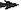
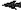

<!DOCTYPE HTML PUBLIC "-//W3C//DTD HTML 4.01 Transitional//EN">

<!--

 Copyright 2000-2002 KnowNow, Inc.  All Rights Reserved.

 @KNOWNOW_LICENSE_START@
 
 Redistribution and use in source and binary forms, with or without
 modification, are permitted provided that the following conditions
 are met:
 
 1. Redistributions of source code must retain the above copyright
 notice, this list of conditions and the following disclaimer.
 
 2. Redistributions in binary form must reproduce the above copyright
 notice, this list of conditions and the following disclaimer in
 the documentation and/or other materials provided with the
 distribution.
 
 3. The name "KnowNow" is a trademark of KnowNow, Inc. and may not
 be used to endorse or promote any product without prior written
 permission from KnowNow, Inc.
 
 THIS SOFTWARE IS PROVIDED "AS IS" AND ANY EXPRESSED OR IMPLIED
 WARRANTIES, INCLUDING, BUT NOT LIMITED TO, THE IMPLIED WARRANTIES OF
 MERCHANTABILITY AND FITNESS FOR A PARTICULAR PURPOSE ARE DISCLAIMED.
 IN NO EVENT SHALL KNOWNOW, INC. OR ITS CONTRIBUTORS BE LIABLE FOR ANY
 DIRECT, INDIRECT, INCIDENTAL, SPECIAL, EXEMPLARY, OR CONSEQUENTIAL
 DAMAGES (INCLUDING, BUT NOT LIMITED TO, PROCUREMENT OF SUBSTITUTE
 GOODS OR SERVICES; LOSS OF USE, DATA, OR PROFITS; OR BUSINESS
 INTERRUPTION) HOWEVER CAUSED AND ON ANY THEORY OF LIABILITY, WHETHER
 IN CONTRACT, STRICT LIABILITY, OR TORT (INCLUDING NEGLIGENCE OR
 OTHERWISE) ARISING IN ANY WAY OUT OF THE USE OF THIS SOFTWARE, EVEN IF
 ADVISED OF THE POSSIBILITY OF SUCH DAMAGE.
 
 @KNOWNOW_LICENSE_END@

 $Id: palmbeach.html,v 1.2 2003/02/08 05:02:21 ifindkarma Exp $

-->

<html>

<head>
<meta http-equiv="content-type" content="text/html; charset=utf-8" />
<title>pubsub vote 1: election 2000, palm beach style</title>

<!-- The PubSub JavaScript Library -->
<script src="/kn?do_method=lib"></script>

<script><!--

topic = (kn_argv.kn_topic)? kn_argv.kn_topic : "/what/election-2000";
var votes = new Object;
votes.total = 0;

function render_shares()
{
    if (document.all)  // An IE-4 only feature
    {
        // for every _bar, if there are any corresponding votes, draw
        for (var i=0; i < document.all.length; i++)
        {
            n = document.all[i].name;
            if (n && (n.substr(n.length-4,4) == "_bar") &&
                votes[n.substring(0,n.length-4)])
            {
                document.all[i].bgColor="green";
                document.all[i].width = 
                    Math.round((votes[n.substring(0,n.length-4)] /
                                         votes.total)*100) + "%";
            }
        }
    }
}

function add_vote(ballot) 
{
    var candidates = ballot.kn_payload.split(",");

    for (var i=0; i<candidates.length; i++) 
    {   
            if (votes[candidates[i]] == void 0)
                votes[candidates[i]] = 0;
            votes[candidates[i]]++; 
            votes.total++;
    }       
    render_shares();
}

function init(){
    kn_subscribe(topic, add_vote, {do_max_age: 3*24*60*60 });
}

function vote(value) {
	kn.publish(topic, {kn_payload: value});
}

function gutteritem(url, value) {
	return (value 
      ?  '<a href="javascript:void vote(' + "'" + value + "'" + ')">' 
      : ''
     ) + 
     '' +
     (value ? '</a>' : '');
}

function hole(value) { return gutteritem("hole.png", value); }

function nohole() { return gutteritem("nohole.png"); }

function candidate(party, pres, vice, left, value) {
	return '<td rowspan="4"' + (left ? "" : 'align="right"') + 
           '><font face="Helvetica,sans-serif"><center><big>(' +
           party + ')</big></center><b>' + pres + 
           ' </b><small>- PRESIDENT</small><br>' +
           '<b>' + vice + '</b><small>- VICE PRESIDENT</small><br>' +
           '<table border="0" width="350" height="1"><tr><td name="' + value + 
           '_bar" bgColor="white" width="20%" height="1">' +
           '</td>' +
           '<td height="1"></td></table></td>';
}

function row(string) {
	return "<tr>" + string + "</tr>\n";
}

function arrow(num) {
	return '<td rowspan="2" align="right">' + num + '</td>';
}

function larrow(num) {
	return '<td rowspan="2"> ' + num + '</td>';
}

function centercell(str) {
	return '<td rowspan="2">' + str + '</td>';
}

function arrowrow(num, value) {
	return row(arrow(num) + centercell(hole(value)) + centercell(''));
}

function larrowrow(num, value) {
	return row(centercell('') + centercell(hole(value)) + larrow(num));
}

//-->
</script>

</head>
<body bgcolor="white">
<table border="0" cellspacing="0" cellpadding="0">
<script><!--
var cand_num = 4;
var candidate_table = '<tr>' + 
               candidate("REPUBLICAN", "GEORGE W. BUSH", "DICK CHENEY", true, 'bush') +
               '<td colspan="3" height="20"></td><th rowspan="2"></th></tr>\n' +
               arrowrow(3, 'bush');
function add_candidate(party, pres, vice, value) {
	candidate_table +=
               row(candidate(party, pres, vice, cand_num % 2, value)) +
               ((cand_num % 2) ? arrowrow : larrowrow)(cand_num, value);
    cand_num ++;
}
add_candidate("REFORM", "PAT BUCHANAN", "EZOLA FOSTER", 'pikachu');
add_candidate("DEMOCRATIC", "AL GORE", "JOE LIEBERMAN", 'gore');
add_candidate("KLEINER PERKINS", "VINOD KHOSLA", "JOHN DOERR", 'khosla');
add_candidate("KNOWNOW", "ROHIT KHARE", "ADAM RIFKIN", 'rohit');
add_candidate("GREEN", "RALPH NADER", "WINONA LaDUKE", 'nader');
add_candidate("SOCIALIST", "DAVID McREYNOLDS", "MARY CAL HOLLIS", 'mcreynolds');
add_candidate("LIBERTARIAN", "HARRY BROWNE", "ART OLIVER", 'browne');
add_candidate("CONSTITUTION", "HOWARD PHILLIPS", "J. CURTIS FRAZIER", 
	'phillips');
add_candidate("WORKERS WORLD", "MONICA MOOREHEAD", "GLORIA La RIVA", 
    'moorehead');
add_candidate("SOCIALIST WORKERS", "JAMES HARRIS", "MARGARET TROWE", 'harris');
candidate_table += row('<td rowspan="4" align="right"' + 
           '><font face="Helvetica,sans-serif"><big>' +
           'WRITE-IN CANDIDATE</big><br>' +
           "To vote for a write-in candidate, follow the <br>" +
           "directions on the long stub of your ballot card.<br>" +
           '</td>') + 
	 row(centercell('') + centercell(nohole()) + centercell(''));
cand_num++;
add_candidate("NATURAL LAW", "JOHN HAGELIN", "NAT GOLDHABER", 'hagelin');
add_candidate("NO PARTY", "NOBODY", "NOBODY", 'nobody');
document.write(candidate_table);

// -->
</script>

</table>
</body>
</html>
